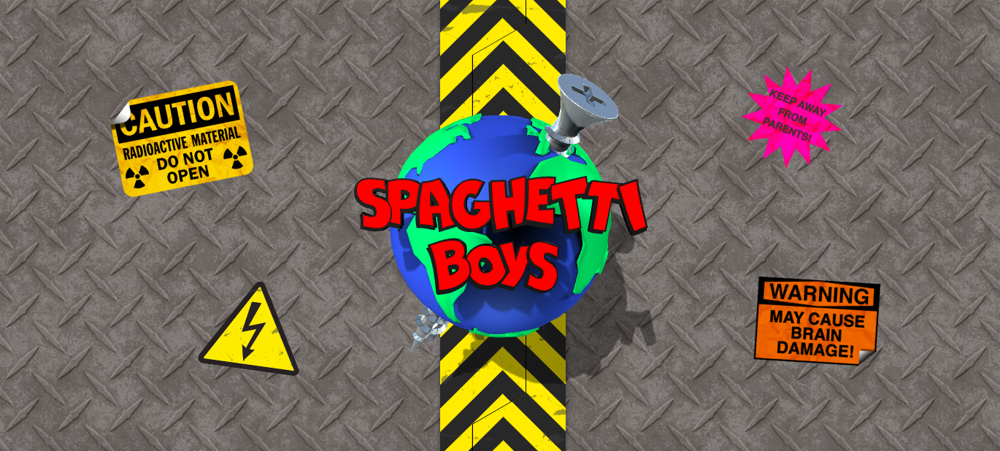
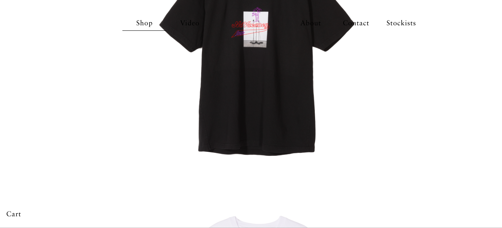
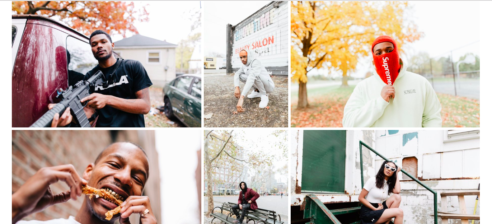
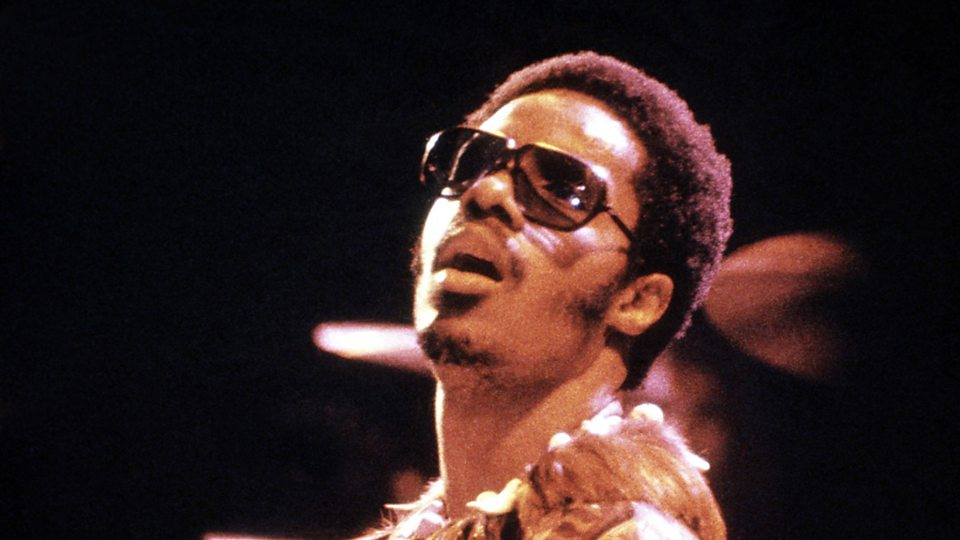
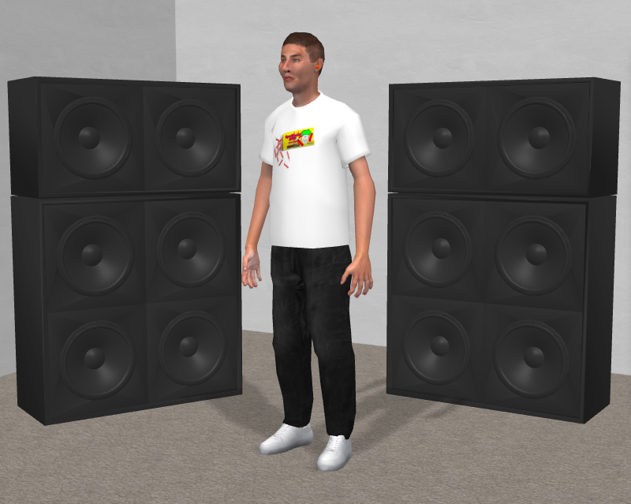

The work of Ari Saal Forman is very unique. His website reflects his uniqueness with a website essentially in a website. I love interactivity and the fact that it becomes another screen within a screen is really cool.
I really like the entry to this website. When your cursor hovers over the earth it starts to animate and then large military gates open and take you into the site. I want to create something like this as an entrance to my website.
I like how the objects scroll up all while maintaining the logo at the top. It's important that I keep something like that for my website.
I like this photographers photo website because the photos are big enough for the viewer to see. The resolution is also very high.
I also want to use a lot of my photos because it would most likely be a photography website as that is the most important thing about me. Here are some of the photos I would like to use.
I want to also have a playlist play so people can enjoy my website while listening to music. It would depend on how dark and punk I want to make my website, but I would most likely shuffle my soul playlists.
I want to create an interactive component to this website. Here is a 3d animated doll that you can move. I might want to incorporate something like this.
Lastly I want to create a tab where I talk about my life as a photographer as well as list some of my accomplishments. I’ll incorporate things like my age and where I go to school now.